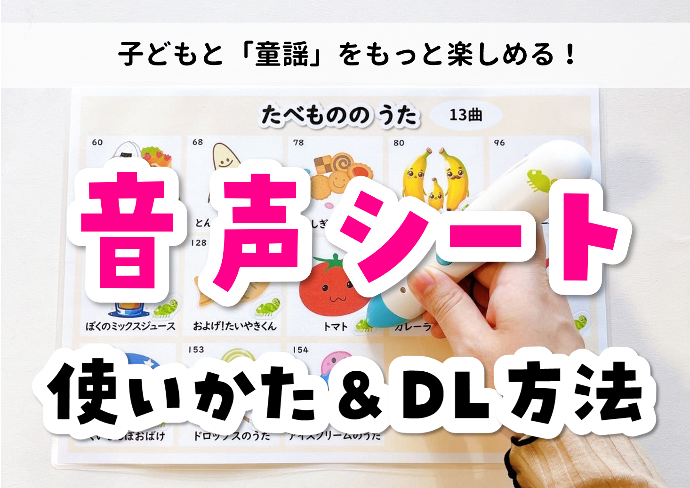

音声ペンをつかった「くもんのうたシート」
音声ペン対応の「くもんのうたシート」を作りました！
「くもんのうた200絵本」は本当に買ってよかったグッズの１つです！
こちら、なんといってもすごいのが
200曲も入っているところ！！
圧倒的曲数で、知育ママ達の御用達と言っても
過言ではない商品です👍
なのですが、使っているうちに１つ思うことがあり、
自分でタッチ出来て操作できるうた絵本のように
子どもが自分で曲を選んで聞くことができたら
もっといいなぁとずっと思っていました🥹
こういった歌のシートがあれば、
もっと歌を楽しむことができるなと思い、
今回制作に至りました！
目次
データシェア
シートの作り方
3歳むすめの反応は？
データシェア
●ふゆのうた

ダウンロードはこちら
●たべもののうた

ダウンロードはこちら
*注意*
利用事項をよく確認の上ご使用ください。
〇ご家庭での個人利用
×素材の加工・販売・商用利用不可
×素材の無断転載
シートの作り方
１，印刷する
まずはデータの印刷をお願いします👍
２，音声ペンのセット
わが家では「カメレオンリーダー」を愛用しています！
音源をPCに取り込み、音声ペンのシールを台紙に貼り、
音声ペンのリネーム作業を行う…といった手順が必要となります。
手順に迷うかたは、カメレオンリーダーの公式サイトなどを参考にしてみてください！
↓こちら
カメレオンリーダー公式ホームページ
３，ラミネート加工をする
最後にラミネート加工をしていきます。
音声ペンシールの上からラミネートをかけても
問題なく再生できました👍
ラミネーターはアイリスオーヤマのものを使っています！
４，これで完成♪
完成したら音が正しく入っているか確かめてみてください！
3歳むすめの反応は？

結論からいうと、
とっても作ってよかった！です🥹
まだひらがなは読めない娘ですが
自分の好きな曲のイラストを
あっという間に覚えてしまいました😯
「今日はクリスマスの曲を聞く～！」
と言って、自分でペンを鳴らして、喜んでいました👍
手順は色々と複雑ではあるけど、本当に作ってよかった！
![[商品価格に関しましては、リンクが作成された時点と現時点で情報が変更されている場合がございます。]](https://hbb.afl.rakuten.co.jp/hgb/204da11e.463b2b12.204da11f.8e375bdf/?me_id=1213310&item_id=19377760&pc=https%3A%2F%2Fthumbnail.image.rakuten.co.jp%2F%400_mall%2Fbook%2Fcabinet%2F8515%2F9784774328515.jpg%3F_ex%3D128x128&s=128x128&t=picttext "[商品価格に関しましては、リンクが作成された時点と現時点で情報が変更されている場合がございます。]")
![[商品価格に関しましては、リンクが作成された時点と現時点で情報が変更されている場合がございます。]](https://hbb.afl.rakuten.co.jp/hgb/37dcc509.a83ee615.37dcc50a.6fcda0fd/?me_id=1231561&item_id=10007424&pc=https%3A%2F%2Fthumbnail.image.rakuten.co.jp%2F%400_mall%2Fbungudo%2Fcabinet%2Fbaner%2F03130468%2F09543374%2F539623.jpg%3F_ex%3D128x128&s=128x128&t=picttext "[商品価格に関しましては、リンクが作成された時点と現時点で情報が変更されている場合がございます。]")